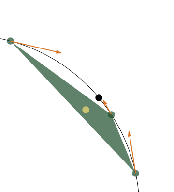
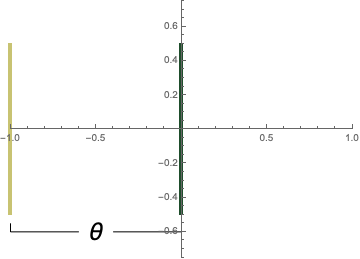
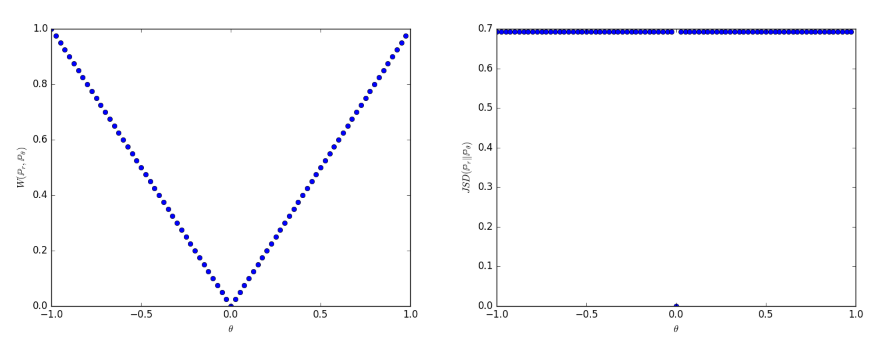

class: center, middle, titlepage count: false # Optimal Transport and Machine Learning ## Joshua Mirth .source[Colorado State University] ### .source[Data Science Seminar – October 10, 2019] --- <!-- # Outline .bigger[ I. Machine Learning as Probability Optimisation II. Wasserstein Space and Its Geometry III. Duality IV. Wasserstein GANs and comparison with other metrics ] --> # What is a GAN? Generative Adversarial Networks (GANs) consists of a discriminator and a generator, which learn by competing with each other. .center[ <img src="gan_schema.png", width=700> .source[Source: skymind.ai] ] --- .center[ <iframe src="https://www.thispersondoesnotexist.com", width=500, height=500></iframe> .source[thispersondoesnotexist.com] ] --- ## Mathematical Formalism: * The generator is a parametric function `\(g_\theta \colon Z \to X\)` (some type of neural net). It is given random input `\(z \sim p(z)\)` (e.g. Gaussian noise). This induces a probability distribution `\(\mathbb{P}_\theta\)` on `\(X\)`. -- * The discriminator is a function `\(D \colon X \to [0,1]\)` (also a neural net). When optimized, it classifies input as real or fake: `\(D(x) = 1\)` if `\(x\)` is a real (`\(x \sim \mathbb{P}_r\)`), and `\(D(x) = 0\)` if `\(x\)` is fake (`\(x = G(z) \sim \mathbb{P}_\theta\)`). -- `\(D\)` should maximize the loss function: `$$ L(D,g_\theta) = \mathbb{E}_{x \sim \mathbb{P}_r} \log(D(x)) + \mathbb{E}_{x \sim \mathbb{P}_\theta} \log(1-D(x)) $$` -- Together `\(D\)` and `\(G\)` are looking for a Nash equilibrium of `$$ \min_{G} \max_{D} \mathbb{E}_{x \sim \mathbb{P}_r} \log(D(x)) + \mathbb{E}_{x \sim \mathbb{P}_\theta} \log(1-D(x)) $$` This is optimized when `\(\mathbb{P}_r = \mathbb{P}_\theta\)`, that is, when the distribution has been learned perfectly. --- ## Empirical Challenges * A poor discriminator does not give the generator meaningful feedback. -- * Simultaneity: not guaranteed to converge if both updating at the same time. .center[ <img src="nash_equilibrium.png", width=450> .source[`x` is trying to minimize `F = xy` and `y` to maximize `F`. Source: [5].] ] -- * Mode collapse: the generator finds a couple good outputs and gets stuck on them. -- These can all be fixed by training the discriminator to optimality. -- * If the discriminator is too good, the generator does not learn! ??? Come back to the last point later. --- ## Reframing: The loss function measures the difference between two probability distributions. -- Specifically, it is (up to constants at optimality) the Jensen–Shannon divergence: If `\(p\)` and `\(q\)` are densities of `\(\mathbb{P}_p\)` and `\(\mathbb{P}_q\)`, then `$$ D_{JS}(\mathbb{P}_p\|\mathbb{P}_q) := \frac{1}{2}D_{KL}\left(p\|\frac{p+q}{2}\right) + \frac{1}{2}D_{KL}\left(q\|\frac{p+q}{2}\right) $$` where`\(D_{KL}\)` is the Kullback–Leibler divergence: `$$ D_{KL}(\mathbb{P}_p\|\mathbb{P}_q) := \int p(x)\log\left(\frac{p(x)}{q(x)}\right) \mathrm{d}x $$` -- Jensen-Shannon divergence is (the square of) a metric on the set of probability distributions on `\(\mathbb{R}^n\)`. -- **Question:** What if we change the topology? --- class: middle, center, titlepage count: false # Wasserstein Spaces --- # The Wasserstein Metric Let `\(\mathcal{M}\)` be the set of probability measures on `\(\mathbb{R}^n\)` with finite second moment, `$$ \int_{\mathbb{R}^n} \|x\|^2_2 \mathrm{d}\mu \lt +\infty . $$` * A _coupling_ between measures `\(\mu\)` and`\(\nu\)` is a measure `\(\gamma\)` on `\(\mathbb{R}^n \times \mathbb{R}^n\)` with marginals `\(\mu\)` and`\(\nu\)`. -- * The Wasserstein distance is the _optimal_ coupling, `$$ W_2(\mu,\nu) := \min_{\gamma} \left( \int_{\mathbb{R}^n} \int_{\mathbb{R}^n} \|x - y\|^2 \mathrm{d}\gamma(x,y) \right)^{1/2} . $$` -- This is a metric! * Well-defined. * Non-degenerate. * Symmetric. * Triangle inequality (not obvious). ??? Show on board what product measure is. --- ## Intuition: the earth-mover's metric If `\(\mu \)` is a pile of dirt, and `\(\nu \)` is a desired location for it, what is the easiest way to turn `\(\mu \)` into `\(\nu \)`? ??? Draw on board? -- ## Convergence properties: The Wasserstein distance metrizes weak convergence: for any sequence of probability measures `\((\mu_k)_{k \in \mathbb{N}}\)`, `$$ \lim_{k \to \infty} W_2(\mu_k,\mu) = 0 \iff \lim_{k \to \infty} \mu_k \rightsquigarrow \mu $$` where `\(\rightsquigarrow \)` denotes weak convergence (convergence in distribution). --- ## Geometric properties: * Wasserstein space `\(\mathcal{M}\)` is a geodesic space. Let `$$ \alpha(t) = ((1-t)\pi^1 + t\pi^2) $$` where `\(\pi^1\)` and `\(\pi^2\)` are the projections from `\(\mathbb{R}^n \times \mathbb{R}^n \to \mathbb{R^n}\)`. For any `\(\mu \)` and `\(\nu \)` with optimal coupling `\(\gamma \)` the shortest path between them is `$$ \alpha(t)_{\#}\gamma $$` the _pushforward_ of `\(\gamma\)` along `\(\alpha(t)\)`. -- Intriguingly, `\(\mathcal{M}\)` is _positively curved_ [1]. ??? Draw example on board. --- ## Geometric properties: * Wasserstein space has a (weak) Riemannian structure. Roughly, the tangent space at `\(\mu\)` is the set of vector fields `\(V\)` such that `$$ \int_{\mathbb{R}^n} \langle V , V \rangle \mathrm{d}\mu \lt +\infty . $$` .center[  ] --- class: middle, center, titlepage count: false # Wasserstein GAN --- ## Comparison of metrics Let `\(\mu\)` be the uniform distribution on `\(\{0\}\times [-.5,.5] \)` and `\(\mu_{\theta}\)` be uniform on `\(\{\theta\}\times [-.5,.5] \)`. .center[  ] -- When `\(\theta \neq 0 \)`: * Wasserstein distance: `\(W_2(\mu,\mu_\theta) = |\theta| \)`. * JS divergence: `\(D_{JS}(\mu \| \mu_\theta) = \log(2) \)` * KL divergence: `\(D_{KL}(\mu \| \mu_\theta) = D_{KL}(\mu_\theta \| \mu) = +\infty \)` (All are zero at `\(\theta=0\)`.) --- ## Gradients .center[  .source[Comparison of the derivative of `\(W_2(\mu,\mu_\theta) \)` and `\(D_{JS}(\mu \| \mu_\theta)\)` with respect to `\(\theta\)` (source: [3]). ]] Wasserstein distance has a meaningful derivative when the supports are disjoint. JS and KL divergences are not meaningful unless support has overlap. -- `\(\implies\)` Wasserstein metric better for gradient descent if supports are disjoint. --- ## Supports _are_ disjoint Expect that the real distribution `\(\mathbb{P}_r\)` is supported on a low-dimensional manifold. -- **Theorem:** A neural network `\(g_\theta \colon Z \to X\)` has image `\(g(Z)\)` with dimension at most dim`\((Z)\)`. [2] Therefore `\(\mathbb{P}_\theta\)` is supported on a low-dimensional manifold. -- These manifolds almost certainly do not intersect, and if they do, it is almost certainly _transversally_, and so of measure zero w/r/t both `\(\mathbb{P}_\theta\)` and `\(\mathbb{P}_r\)`. --- # Wasserstein GAN A GAN which uses `\(W_2(\mathbb{P}_\theta,\mathbb{P}_r)\)` as the loss function. In particular, the discriminator can be trained to optimality. -- ###Implementation: The minimization `$$ W_2(\mathbb{P}_\theta,\mathbb{P}_r) := \min_{\gamma} \left( \int_{\mathbb{R}^n} \int_{\mathbb{R}^n} \|x - y\|^2 \mathrm{d}\gamma(x,y) \right)^{1/2} $$` is "highly intractable" [3]. --- ## Kantorovich–Rubinstein Duality **Theorem:** (K–R Duality) The Wasserstein minimization admits a dual problem: `$$ \min_{\gamma} \int_{\mathbb{R}^n} \int_{\mathbb{R}^n} \|x - y\|^2 \mathrm{d}\gamma(x,y) = \sup_{f} \mathbb{E}_{x \sim \mathbb{P}_r}[f(x)] - \mathbb{E}_{x \sim \mathbb{P}_\theta}[f(x)] $$` where the sup is taken over all Lipschitz functions `\(f \colon \mathbb{R}^n \to \mathbb{R}\)` [4]. -- *Proof:* Linear programming. Recall that `$$ \inf_\vec{y} \vec{b} \cdot \vec{y} = \sup_\vec{x} \vec{c} \cdot \vec{x} $$` where the inf is over `\(\vec{y} \ge 0, A^T\vec{y} = \vec{c} \)` and the sup is over `\(A\vec{x} = \vec{b}\)`. Kantorovich-Rubinstein duality is a continuous limit of this. --- **Theorem:** There is a solution to `$$ \max_{f} \mathbb{E}_{x \sim \mathbb{P}_r}[f(x)] - \mathbb{E}_{x \sim \mathbb{P}_\theta}[f(x)] $$` and `$$ \nabla_\theta W_2(\mathbb{P}_\theta,\mathbb{P}_r) = -\mathbb{E}_{z \sim p(z)}[\nabla_\theta f(g_\theta (z))] $$` when both are defined [3]. -- This is now a tractable optimization for a neural network. -- ### Questions: * "Weight clipping is a clearly terrible way to enforce a Lipschitz constraint" [3] — is there a better way? -- * There are many other metrics on probability space. Is Wasserstein really the best? -- * What does the geometry of Wasserstein space tell us? --- class: titlepage # Thank you! ### References: .source[ 1. Ambrosio, L., & Gigli, N. (2013). A user’s guide to optimal transport. In Modelling and optimisation of flows on networks (pp. 1-155). Springer, Berlin, Heidelberg. 2. Arjovsky, M., Bottou, L. (2017). Towards Principled Methods for Training Generative Adversarial Networks. arXiv preprint arXiv:1701.04862. 3. Arjovsky, M., Chintala, S., & Bottou, L. (2017). Wasserstein GAN. arXiv preprint arXiv:1701.07875. 4. Villani, C. (2003). Topics in optimal transportation (No. 58). American Mathematical Soc. 5. Weng, L., (2017). From GAN to WGAN. https://lilianweng.github.io/lil-log/2017/08/20/from-GAN-to-WGAN.html. .center[ (Slides available at https://www.math.colostate.edu/~mirth/talks.html ) ] ]